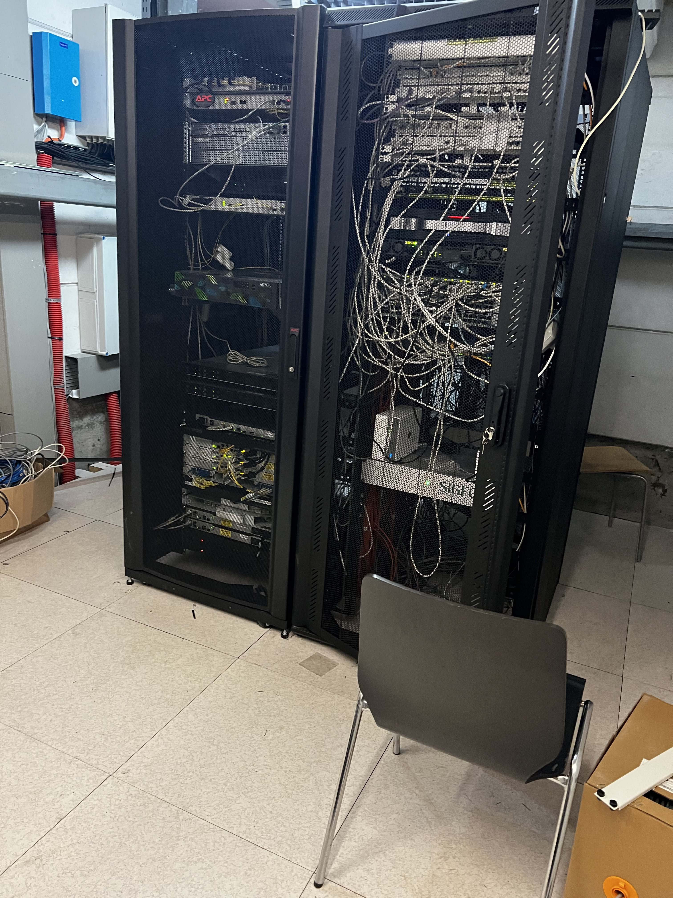

Vandaag werkte ik weer van 10 uur tot 18 uur. Ik begon de dag met nieuwe pc’s die deze ochtend geleverd werden te installeren. Het waren 10 pc’s dus we waren er wel een paar uur mee bezig. Na dat de pc’s allemaal geïnstalleerd waren heeft de it verantwoordelijke mij mee genomen naar de servers en heeft hij mij daar heel veel uitleg over gegeven. De pc’s installeren ging wel goed en bracht niet al te veel complicaties met zich mee. Toen ik uitleg kreeg over de servers en ze te zien kreeg was ik wel onder de indruk over hoe groot ze waren. Als ik de dag in 1 woord moet omschrijven is het met het woord ontdekken!
